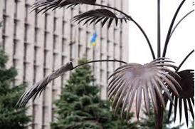

Le palmier appartient dans le classement des arbres à la famille des monocotylédones. Le domaine d’évolution naturelle de ces arbres correspond aux régions tropicales et subtropicales. Sur le plan symbolique, le palmier est considéré comme une quintessence de la richesse et de la supériorité.
La ville de Donetsk n'a rien à voir avec les tropiques, mais cet arbre est présent sur le blason régional de Donetsk. Ce casse-tête logique déconcerte tous les observateurs étrangers. Pour comprendre comment une plante tropicale est devenue un symbole de la région du charbon et des métaux ferreux nécessite une explication particulière.
Au début, le palmier du Donbass était un pur produit d’opération promotionnelle. Il fut fabriqué à partir d’un rail de la production de l'aciérie « la Société de la Nouvelle Russie » par le forgeron Alexeï Ivanovitch Mertsalov avec une participation du forgeron-frappeur Philippe Fedotovitch Chkarine. Pourquoi une telle idée originale est venue à Mertsalov ? Tout a commencé lorsque la « Société de la Nouvelle Russie » voulut se présenter à l'Exposition industrielle nationale à Nijni Novgorod. La participation à cette exposition était logiquement et économiquement argumentée : montrer que des rails (les principaux produits de l’aciérie) sont de haute qualité et fiables. À cette époque, il était nécessaire de le prouver. Comme en témoigne Alexeï Ivanov, journaliste et historien donetskien, « en septembre 1873, John Hughes en recherche de profit commença à fabriquer des rails parce que « la fièvre ferroviaire » fut lancée en Russie, et le nombre de chemins de fer augmenta de manière presque exponentielle. Mais des rails eurent mal tournés, leur résistance était de 2-3 fois plus faible que la norme, de plus, ils étaient de trois millimètres au-dessus des tolérances. En conséquence, le Ministère des Chemins de fer recommanda à poser les rails d’Hughes seulement sur les voies de réserve. Depuis le terme de « rail d’Hughes» est devenue une expression familière pout définir quelque chose de basse qualité ».
Blason de la région de Donetsk
Ainsi, afin d'effacer l'image négative de la conscience collective, l'exposition devait être faite pour que tout le monde ait le souffle coupé. De transporter simplement les rails à Nijni Novgorod et de prouver fâcheusement qu'ils étaient bons n’était pas du tout satisfaisant sur le plan de la promotion. L'administration de l'Usine fit un appel à tous pour y penser. Qui arrivera avec quelque chose d’innovant, gagnera un tour gratuit à Nijni Novgorod. Et c’est une idée d’Alexeï Mertsalov qui répondit à ces exigences. Le palmier du rail, étant dans son essence un projet si surprenant, que l’on devait obligatoirement s’en rappeler. Cette idée semblait plus frappante encore que « la Maison de glace » d’Anna Ivanovna, tsarine russe. Le projet fut, à la grande majorité, approuvé avec enthousiasme et A. Mertsalov avec F. Chkarine se mirent au travail.
Le palmier d’acier fut forgé à la fin de 1895. Le Palmier de Mertsalov est fait sans soudage et ni autres assemblages de morceaux monoblocs de rail. Le rail fut sélectionné en tant que matériau de départ à des fins promotionnelles, comme le produit principal de « la Société de la Nouvelle Russie des industries du charbon, du fer et des rails ». La hauteur de Palmier atteint 3 mètres 53 centimètres. Pour sa création, Mertsalov dépense trois semaines de temps. Le sommet de Palmier a une corolle, et autour du tronc il y a dix feuilles. Les feuilles font ressort, même si elles sont forgées en acier et sont solidaires du corps. Pour le Palmier, fut également forgé un cuveau qui se compose de quatre piliers ferroviaires renforcés, autour desquels vingt-trois anneaux métalliques de sections différentes sont empilées. Le nombre d'anneaux correspond à l'âge de l’usine – 23 ans. Le Palmier pèse 325 kilogrammes et le cuveau – 200 kg.
Palmier de Mertsalov à l'Exposition à Nijni Novgorod
Le Palmier de Mertsalov fut très apprécié par des experts, des artistes et des visiteurs ordinaires à l'Exposition à Nijni Novgorod. Alexeï Mertsalov était personnellement présent avec un groupe d'autres ouvriers de l'Usine à l'exposition. Le magazine de Kharkov « Gornazavodskoï listok » décrivit l’œuvre d'Alexeï Mertsalov comme suit :
« Le palmier est fait d'un rail. Son tronc porte dix feuilles avec une corolle au sommet. La hauteur de cet œuvre vraiment artistique fait 3 m 53 cm. Un marteau et un burin, voici les seuls outils utilisés par les forgerons ».
Un autre journal de l'époque a écrit :
« Le palmier impressionne les spectateurs par sa hauteur, sa sveltesse, sa grâce étonnante. Ses feuilles sombres disséquées, divergeant d’une manière éventail à partir du tronc, étaient si légères, et le tronc rugueux si flexible que dans le début, il était difficile de croire que ce n'est pas une plante vivante, prise de la côte du Caucase, mais la plus belle œuvre d'art. Tout le monde voulait la toucher par ses mains ».
En 1900, le Palmier de Mertsalov fut exhibé à l'Exposition mondiale de l'industrie à Paris, où le pavillon de « la Société de la Nouvelle Russie des industries du charbon, du fer et des rails » remporta le Grand Prix. Après avoir assisté à l’Exposition à Paris, le Palmier avec une maquette de la mine fut remis dans le Musée de l'Institut des mines à Saint-Pétersbourg, où l’original du Palmier de Mertsalov est conservé jusqu'à ce jour. L'une de ses feuilles fut rompue lors du transport au Musée. Elle fut attachée ensuite à l’aide des rivets.
Original du Palmier de Mertsalov et M. Anoprienko, ancien recteur de l’Université Nationale Technique de Donetsk, au Musée de l'Institut des mines à Saint-Pétersbourg
Dans les années 1950, le Palmier fut étudié et ces études confirmèrent qu'il avait été fabriqué d'un rail monobloc. Jusqu'à 1953, le nom du créateur n’était pas connu. Le Palmier participa à diverses expositions comme « Le Palmier d’Hughes ». Sous le même nom, il fut conservé à l'Institut des mines à Saint-Pétersbourg. Konstantin Y. Zakharenkov, ingénieur, s’engagea à la recherche de son auteur. En 1959, il trouva Philippe Fedotovitch Chkarine, qui travaillait encore à l'Usine métallurgique de Donetsk, qui reconnut l’œuvre de Mertsalov. Ses paroles furent confirmées par d'autres ouvriers : I. K. Kossenko, F. N. Cheroudilo, V. T. Tsigankova, V. V. Poliakova.
Il semblait que l’idée du « Palmier d’Hughes » fut épuisée. Pourtant après le prochain changement de format d'État il a soudainement été relancé. Et comment !
Au milieu des années 90, Konstantine Vorobyov, un jeune ingénieur-métallurgiste, diplômé de l’Université Nationale Technique de Donetsk, en se rendant compte que la science peut difficilement nourrir, s’engage dans le secteur de la publicité. Il crée une entreprise « Cardinal » et commence à réaliser ses activités créatives. Quelques années plus tard, il fait la connaissance de du maire Vladimir Rybak. Et puis Vorobyov rencontre un allié plus fiable - Viktor Yanoukovitch, le gouverneur de la région de Donetsk. Konstantine Vorobyov est devenu le Directeur exécutif de la Fondation de bienfaisance pour promouvoir le développement et la popularisation du Donbass « Scythe Or ».
À cette époque, il a déjà une carte maîtresse avec laquelle il réalise des convergences importantes. Il s’agit de l'idée de renaissance du Palmier de Mertsalov. Vorobyov, lui-même, plus tard en parle, non sans pathos : « Quand je développais le programme d'image de la région de Donetsk, je cherchais un symbole historique, né dans le Donbass, qui devrait maintenant caractériser la région. Et « le Palmier de Mertsalov », comme un symbole de la paix, de la supériorité, comme un hymne à l'homme de travail et une promotion de marques ukrainiennes sur les marchés mondiaux (un marketing, encore une fois) a convenu aussi bien que possible ».
À la fin du XXe siècle, à l'initiative de la fondation « Scythe Or », l’image du «Palmier de Mertsalov» a été reprise comme un symbole de la région de Donetsk, un symbole de renaissance du Donbass.
Pourquoi cette image a été sélectionnée ?
Premièrement, le «Palmier de Mertsalov » est une création unique de notre compatriote, l’ouvrier d’Hughesovka, qui put forger d’un seul morceau de rail ferroviaire un chef-d'œuvre des arts et de l'artisanat du monde.
Deuxièmement, le palmier a longtemps été considéré comme un symbole universel de la supériorité et du succès, et depuis l'époque de la Grèce antique, les meilleurs des meilleurs ont été gratifiés par une couronne de palmier. Le sujet du palmier est largement représenté partout dans le monde, par exemple, en France il y a été repris dans les insignes de l’Ordre des Palmes Académiques.
Troisièmement, chaque État ou ville a ses propres figues emblématiques : à Moscou ce sont le Kremlin et le Tsar-Cannon, à Paris - la Tour Eiffel, Notre Dame de Paris et l’Arc de Triomphe. « Le Palmier de Mertsalov » avait toutes les raisons pour devenir le symbole du Donbass. Ceci est une image reconnaissable unique, qui permet d'éviter des clichés de la perception de notre région comme celle des cônes de débris, du charbon et du métal. Le Donbass devrait être perçue comme un centre industriel et culturel avec un potentiel énorme.
Le symbolisme du «Palmier de Mertsalov » est aux multiples facettes et a une profonde signification philosophique. Les feuilles larges du palmier ramifié englobent symboliquement toutes les sphères de l'activité humaine, en les combinant dans un seul tronc puissant et en symbolisant ainsi l'engagement et l'unité.
Le tronc entre dans le sol - une source de richesses. L’alliage durable du « Palmier » forgé représente une source de force et à la prospérité de notre pays. Le tronc couronné d’une feuille de Palmier est un symbole de la supériorité et du succès durable.
Les résultats des activités de la fondation de « Scythe Or » sont connus : une copie de Palmier a été installée devant le Centre d'exposition « Expo-Donbass », où elle apparaît comme l'emblème de la région de Donetsk, sur le boulevard de Pouchkine et dans plusieurs villes à travers le monde, y compris telles que Moscou, Kiev, L’vov, Khar’kоv, Ottawa, Hanovre, Jérusalem, Damas, Kyoto et d'autres.
Copie de Palmier de Mertsalov sur le boulevard de Pouchkine
Copie de Palmier de Mertsalov près du Centre d'exposition « Expo-Donbass »
Si l’on croie Ulyana Skoybeda, correspondante de « Komsomolskaïa Pravda », Vorobyov peut être considéré comme un aventurier (« toutes les grandes choses ont été faites par des aventuriers »). Quoi qu'il en soit, grâce à lui, Donetsk a obtenu le symbole qui lui manquait. Cependant, le Palmier original à l'Institut des mines de Saint-Pétersbourg n'a pas pu être retiré. Bien que, comme on dit, l’affaire était dans la pommade : le directeur n’était pas là, et la garde a accepté de donner gratuitement l’artefact. Mais l'affaire est allée à vau-l'eau. Le directeur est inopinément revenu. Après avoir appris ce qui s’était passé, il a crié : « Que faites-vous ? Eh bien, c’est un patrimoine de la Russie ! ». Donc, l’œuvre de Mertsalov est resté sur les bords de la Neva. Donetsk a dû faire une copie, réalisé par le forgeron Sergueï Kasprouk selon sa propre technologie car il ne connaissait pas en détail celle de Mertsalov. Mais comme Mertsalov, Kasprouk a travaillé sans soudure, et a créé un palmier d'un rail monobloc à partir d’un rail produit en 1901.
Sergueï Kasprouk en 2006 au VIII Festival international de la Marêchalérie au Parc des figures forgées
Le 27 juillet 2002, une copie du « Palmier de Mertsalov » a été mise dans une grotte sous-marine sur le cap Tarkhankuot dans la baie Tchoudesnaya (en Crimée) par les membres du club de plongée de Donetsk « Aquatique ». Les organisateurs ont choisi le nouveau symbole du Donbass, en considérant également des copies du monument « la Gloire au Travail de Mineurs » à Donetsk et du Monument dédié aux métallurgistes à Marioupol. La grotte a été sélectionnée à l'installer pour que des plongeurs ne soient pas blessés par la cime de palmier lors des submersions ultérieures. La grotte est située à une profondeur de 12.5 mètres. Les coordonnées géographiques : 45 degrés 20 minutes 116 secondes de latitude nord et 32 degrés 33 minutes 722 secondes de longitude est. Cette copie est deux fois plus petite que l'original et a été fabriquée par la firme donetskienne « Lékam ». Pour protéger le Palmier de l'eau de mer, il a été couvert par une peinture spéciale de bateau, fournie par l’Usine de réparation navale Azov. La base a été bétonnée.
Il y avait un projet pour ériger des copies de Palmiers de Mertsalov dans les capitales des pays, leaders dans le monde. Il y avait aussi le projet « le Donbass sur les pics les plus hauts de la planète Terre », où des grimpeurs de la Fédération régionale de l'alpinisme et du tourisme sportif de Donetsk montaient une petite copie de Palmier sur les pics des montagnes, puis la remettraient à l'ambassade des pays où l’ascension avait été réalisée. En 2001-2004, dans le cadre de ce projet, les grimpeurs ont conquis les 7 plus hauts pics du monde - Elbrouz, Aconcagua, McKinley, Kilimandjaro, Everest, Wilhelm, Vinson. Des copies montées avaient un demi-mètre de long et pesaient trois kilogrammes.
Partager cette page